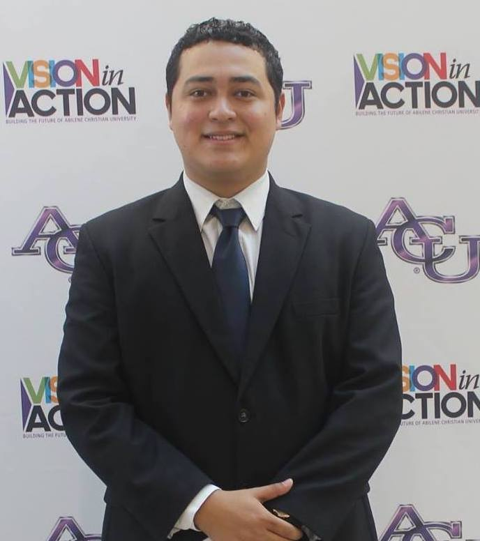

Diego Fernando Zometa Paniagua

NEXT Research Scientist
Email: dfz15a@acu.edu
Education
- BS, Abilene Christian University, Chemistry and Public Service minor, 2019.
Honors & Achievements
- Presidential Scholar
- A member of Jack Pope's Fellows Program
- The synthesis of five new osmium organic frameworks. One being the first octahedral-shaped osmium framework, and another one being the first quadrilateral osmium framework.
- Winner of the 2017 and 2018 Undergraduate Research Festival in the STEM presentation category
- Third place at the 2017 ACS Meeting in Miniature held at Texas Christian University
- Student Representative for Region I (Texas, Oklahoma, and New Mexico) for Alpha Chi's National Council
- Student Representative for the Ribbon Cutting Ceremony of Halbert-Walling Research Center
Expertise and Repertoire
- Three years and a half of research experience in Inorganic Chemistry, where I contributed to the research of Metal Organic Frameworks and Reticular Chemistry
- A summer of research in Organic Chemistry and Polymer Chemistry
- One year of experience working for the Office of Multicultural and International Enrollment in ACU
- One year of experience working for EducationUSA
Scholarly Presentations
- 2017 and 2018 Meeting in Miniature
- 2018 and 2019 Alpha Chi National Conference
- 2019 National Conference of Undergraduate Research (NCUR)
- 2017-2019 Undergraduate Research Festival at ACU
- 2018 ACS Southwestern Regional Meeting
Professional Service
- Teaching assistant and tutor for the summer of 2018 for Dr. Eric Hardegre
Community Service
- Member of the Knights of Columbus since 2016
- Member of LYNAY since 2016, where I provided more than 200 hours of community service
Campus Service
- Student Ambassador for the academic year 2018-2019
- Officer of the ACU Chemistry Club for the years 2016-2019
Awards
- Tommy J. McCord Endowed Research Scholarship in Chemistry
- Paul C. Witt Award
- Chemistry Scholarship Award
- Presidential Scholar
- Servant Leader Scholarship (LYNAY)
- Member of the American Chemical Society (ACS)
- Member of the Division of Organic Chemistry of the American Chemical Society
- Most outstanding senior in Inorganic Chemistry
Biography
- I was born on January 10, 1996 in Sonsonate, El Salvador. I lived most of my life in Santa Tecla, El Salvador though since my family moved there due to my dad's job. In Santa Tecla, I attended Colegio Belen (Belen School) for my elementary and middle school education. For high school, I attended el Centro Cultural Salvadoreño Americano (Salvadorian American Cultural Center). During my junior year of high school, I became a member of El Programa Jovenes Talentos (Gifted Youth Program), which recruits students to teach them mathematics and a STEM field of their choice; my choice was Chemistry. Then, on my senior year, I got an internship with EducationUSA (it is written like that), which is an office from the American Embassy in El Salvador. There I helped to receive admission counselors from American universities, which is how I got the chance to meet Daniel Garcia from Abilene Christian University. Thanks to him, my parents, and God I got the chance to come to ACU to get my Chemistry degree. During the second semester of my Freshman year, Dr. Greg Powell offered me the opportunity to become a member of his research team! During my undergraduate education, I got the chance to work three years and a half for him, as well as a summer for Dr. Brad Rix. These research opportunities allowed me to go to several conferences around the country. In addition, I got the chance to be part of Phi Eta Sigma and Alpha Chi Honors Society as well as LYNAY (Love Your Neighbor As Yourself) which is a volunteering and leadership organization led by Dr. Gary McCaleb. Finally, during my last semester of college, I was offered a job as a Full Time Scientist for the NEXT Lab! Which is where I currently work in finding ways to extract Molybdenum-99 and other useful isotopes from the molten salt.